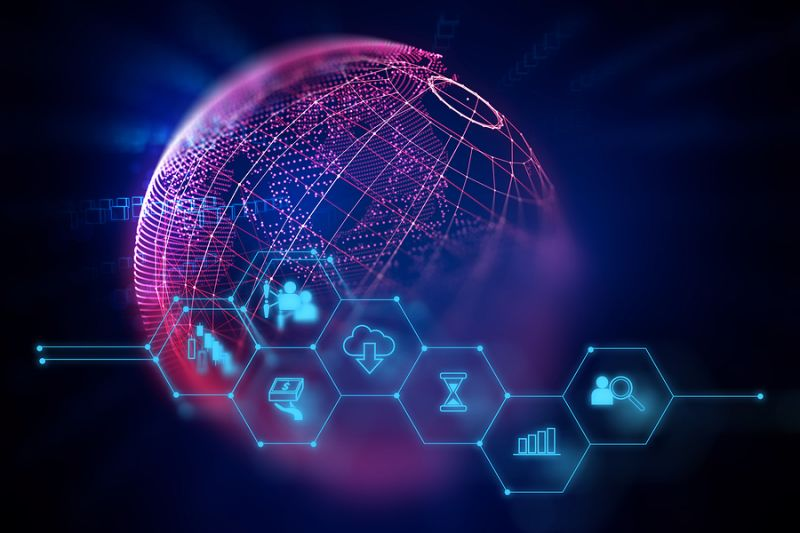

Welcome to HEC Paris Tech, Data & Innovation!
Tech, Data and the Innovative Mindset
Homepage

## Course description
HEC Paris Presents: Tech, Data and the Innovative Mindset. This fresh course provides you with all you need to know
## Previous lessons
Make sure you make it class but here's a small recap:
Lesson 1: Open Source [slides](https://opensource.com/article/17/11/10-open-source-technology-trends-2018)
Lesson 2: Big Data Analytics [slides](https://www.sas.com/en_us/insights/analytics/big-data-analytics.html)
Lesson 3: The Cloud [slides](https://www.linuxjournal.com/content/everything-you-need-know-about-cloud-and-cloud-computing-part-i)
Lesson 4:
## Presentations from Peers
Group 1: Uber [slides]
## Keep Up To Date
Is Elon Musk Really The Worlds Greatest?
 find out what [bloomberg.com](https://www.bloomberg.com/news/articles/2019-03-02/musk-s-crazy-week-cheap-teslas-snarky-tweets-historic-launch) has to say about this
## Tech in Finance
*Is This The Next Big Startup?*
find out what [bloomberg.com](https://www.bloomberg.com/news/articles/2019-03-02/musk-s-crazy-week-cheap-teslas-snarky-tweets-historic-launch) has to say about this
## Tech in Finance
*Is This The Next Big Startup?*
 After raising $250 million from VCs, experts say Slack's next valuation is about to be a big one. Find out more [here](https://www.bloomberg.com/news/articles/2017-07-26/slack-is-raising-250-million-from-softbank-others) on why they say this.
## Alumni Testimonials
Here's what some of the former Tech, Data students had to say about the course
After raising $250 million from VCs, experts say Slack's next valuation is about to be a big one. Find out more [here](https://www.bloomberg.com/news/articles/2017-07-26/slack-is-raising-250-million-from-softbank-others) on why they say this.
## Alumni Testimonials
Here's what some of the former Tech, Data students had to say about the course
 ## Class Schedule
Tuesday 16:20 - 19:30
## Class Updates
Nothing to show.
## About the Professor
Ghislain MAZARS
email address : gmazars@gmail.com
## Class Schedule
Tuesday 16:20 - 19:30
## Class Updates
Nothing to show.
## About the Professor
Ghislain MAZARS
email address : gmazars@gmail.com